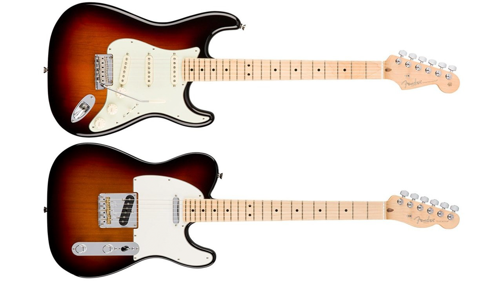

Differences Between the Fender Stratocaster and Fender Telecaster

1. Bridge
The Strat has a floating bridge, meaning the pitch of a note can be manipulated using the tremolo bar.
The Tele has a set bridge, meaning there is no ability to manipulate pitch with the bridge after the note is played.
2. Body
The Strat has a contoured body with horns on either side.
The Tele has zero contours and only has one horn on the bottom.
3. Electronics
The Strat has 3 single coil pickups, a 5-way switch, a volume knob, and two tone knobs.
The Tele only has two pickups, a 3-way switch, and one volume and one tone knob.
4. Headstock
The Strat has a large headstock.
The Tele has a much smaller headstock.